# Load necessary libraries
library(dplyr)
library(readr)
library(tidyr)
library(ggplot2)
library(stringr)Analyzing Enrollment of Core Classes for CS/MATH/STA/ECON Majors.
# Load the data
data <- read_csv("data/data.csv")New names:
Rows: 28 Columns: 27
── Column specification
──────────────────────────────────────────────────────── Delimiter: "," chr
(1): ...1 dbl (26): ECON 101, ECON 104, ECON 201, ECON 204, ECON 205 (B.S.),
ECON 210,...
ℹ Use `spec()` to retrieve the full column specification for this data. ℹ
Specify the column types or set `show_col_types = FALSE` to quiet this message.
• `` -> `...1`colnames(data)[1] <- "Semester"
# Function to identify academic years based on semesters
identify_academic_year <- function(semester) {
year <- substr(semester, 2, 4)
if(substr(semester, 1, 1) == "F") {
return(paste0("AY", year, "-", as.numeric(year) + 1))
} else {
return(paste0("AY", as.numeric(year) - 1, "-", year))
}
}
# Add academic year column
data$AcademicYear <- sapply(data$Semester, identify_academic_year)
# Group data by academic year, then sum each course's enrollment numbers
yearly_sum <- data %>%
group_by(AcademicYear) %>%
summarise(across(-Semester, sum, na.rm = TRUE))
# Now, pivot the data to long format to identify active years easily
data_long <- yearly_sum %>%
pivot_longer(-AcademicYear, names_to = "Course", values_to = "Enrollment")
# Identify years with any active enrollments (sum of enrollments across courses > 0)
active_years <- data_long %>%
group_by(AcademicYear) %>%
summarise(TotalEnrollment = sum(Enrollment, na.rm = TRUE)) %>%
filter(TotalEnrollment > 0) %>%
select(AcademicYear)
# Filter the original yearly_sum to include only active years
yearly_sum_active <- yearly_sum %>%
filter(AcademicYear %in% active_years$AcademicYear)
# Print the yearly sum of enrollments for each course in active years
print(yearly_sum_active)# A tibble: 4 × 27
AcademicYear `ECON 101` `ECON 104` `ECON 201` `ECON 204` `ECON 205 (B.S.)`
<chr> <dbl> <dbl> <dbl> <dbl> <dbl>
1 AY20-21 422 308 374 250 223
2 AY21-22 447 215 365 207 157
3 AY22-23 515 335 244 197 107
4 AY23-24 668 314 537 228 141
# ℹ 21 more variables: `ECON 210` <dbl>, `COMPSCI 101` <dbl>,
# `COMPSCI 201` <dbl>, `COMPSCI 210` <dbl>, `COMPSCI 250` <dbl>,
# `COMPSCI 230` <dbl>, `COMPSCI 330` <dbl>, `MATH 221` <dbl>,
# `MATH 245` <dbl>, `MATH 401` <dbl>, `MATH 431` <dbl>, `MATH 501` <dbl>,
# `MATH 531` <dbl>, `STA 199` <dbl>, `STA 210` <dbl>, `STA 211` <dbl>,
# `STA 360` <dbl>, `STA 432` <dbl>, `STA 440` <dbl>, `PHY 161` <dbl>,
# `PHY 162` <dbl># Pivot the data to a long format for easier calculations
data_long <- yearly_sum %>%
pivot_longer(-AcademicYear, names_to = "Course", values_to = "Enrollment") %>%
filter(Enrollment > 0) # Ensure we only consider courses with enrollments
# Fill in missing enrollments with 0 for courses not offered in some years
data_long <- data_long %>%
group_by(Course, AcademicYear) %>%
summarize(Enrollment = sum(Enrollment, na.rm = TRUE), .groups = 'drop')
# Calculate the percentage change
data_long <- data_long %>%
arrange(Course, AcademicYear) %>%
group_by(Course) %>%
mutate(Percent_Change = if_else(Enrollment == 0, 0, (Enrollment - lag(Enrollment, default = first(Enrollment))) / lag(Enrollment, default = first(Enrollment)) * 100)) %>%
ungroup()
# Replace NA in Percent_Change with 0 for the first year a course is introduced
data_long$Percent_Change[is.na(data_long$Percent_Change)] <- 0
# View the result
print(data_long)# A tibble: 101 × 4
Course AcademicYear Enrollment Percent_Change
<chr> <chr> <dbl> <dbl>
1 COMPSCI 101 AY20-21 433 0
2 COMPSCI 101 AY21-22 478 10.4
3 COMPSCI 101 AY22-23 478 0
4 COMPSCI 101 AY23-24 433 -9.41
5 COMPSCI 201 AY20-21 787 0
6 COMPSCI 201 AY21-22 583 -25.9
7 COMPSCI 201 AY22-23 613 5.15
8 COMPSCI 201 AY23-24 684 11.6
9 COMPSCI 210 AY21-22 253 0
10 COMPSCI 210 AY22-23 335 32.4
# ℹ 91 more rows# Identify unique course prefixes (assuming course codes are consistent in format)
course_prefixes <- unique(gsub("([A-Z]+).*", "\\1", data_long$Course))
# Print course prefixes for verification
print(course_prefixes)[1] "COMPSCI" "ECON" "MATH" "PHY" "STA" # Function to plot data for each subject area
plot_subject_area <- function(data, metric, course_prefixes) {
for(prefix in course_prefixes) {
current_data <- data %>%
filter(str_detect(Course, pattern = paste0("^", prefix))) %>%
arrange(Course, AcademicYear)
p <- ggplot(current_data, aes(x = AcademicYear, y = !!sym(metric), color = Course, group = Course)) +
geom_line() +
geom_point() +
theme_minimal() +
labs(title = paste(metric, "in Enrollment for", prefix, "Courses"),
x = "Academic Year", y = metric, color = "Course") +
theme(axis.text.x = element_text(angle = 45, hjust = 1))
print(p)
}
}
# Identify unique course prefixes
course_prefixes <- unique(str_extract(data_long$Course, "^[A-Z]+"))
# Plot total enrollments for each subject area
plot_subject_area(data_long, "Enrollment", course_prefixes)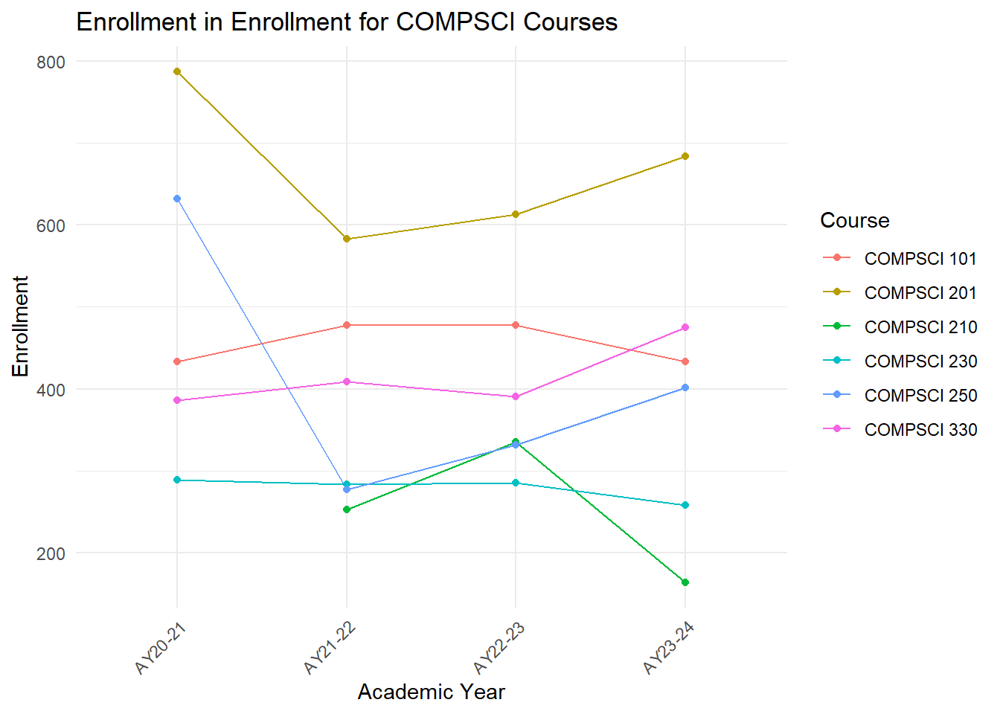
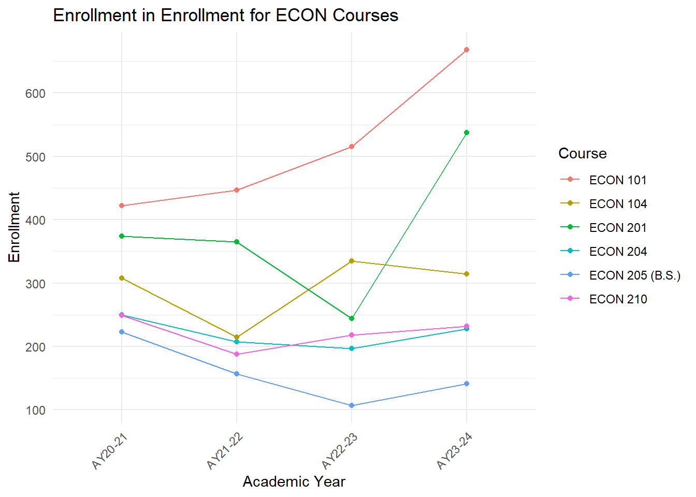
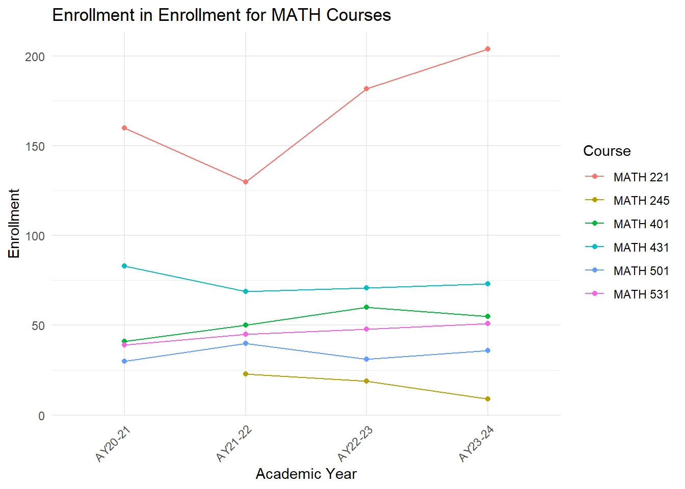
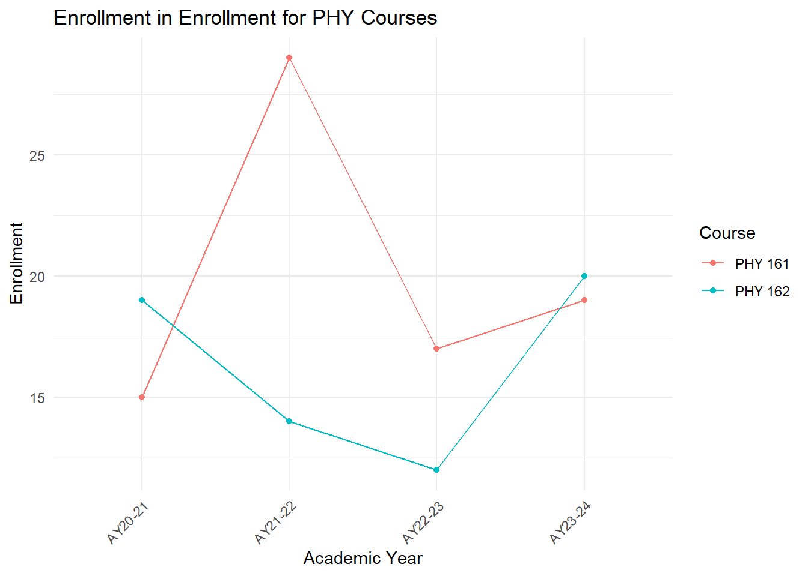
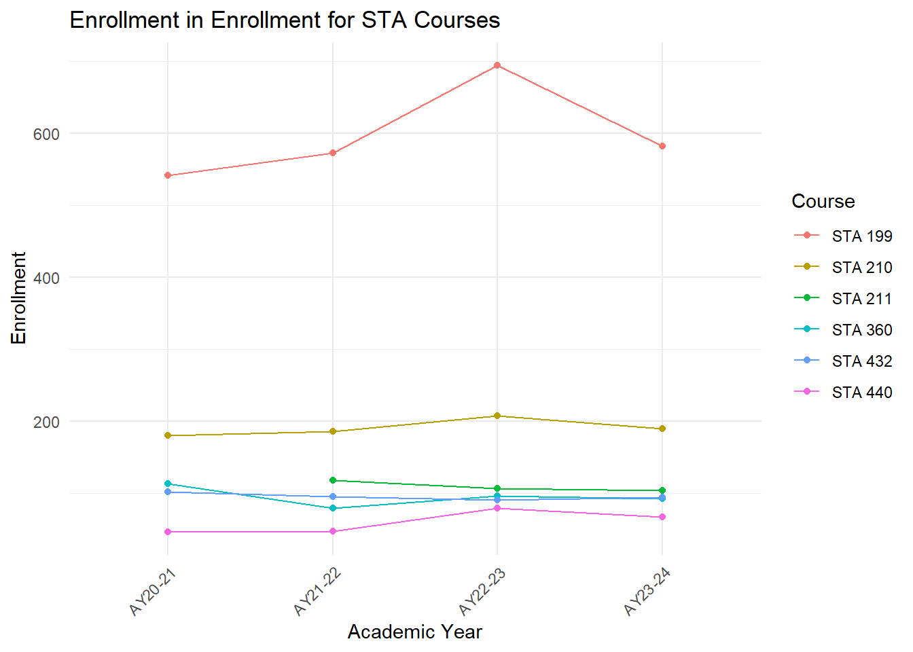
# Plot percentage change for each subject area
plot_subject_area(data_long, "Percent_Change", course_prefixes)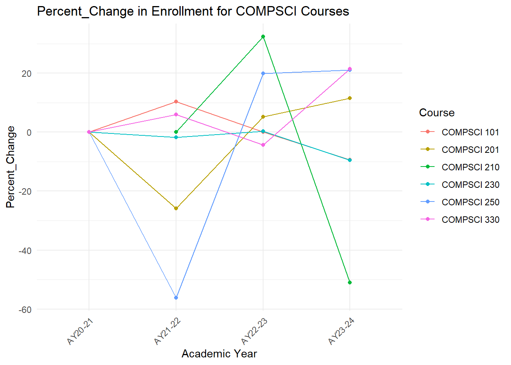
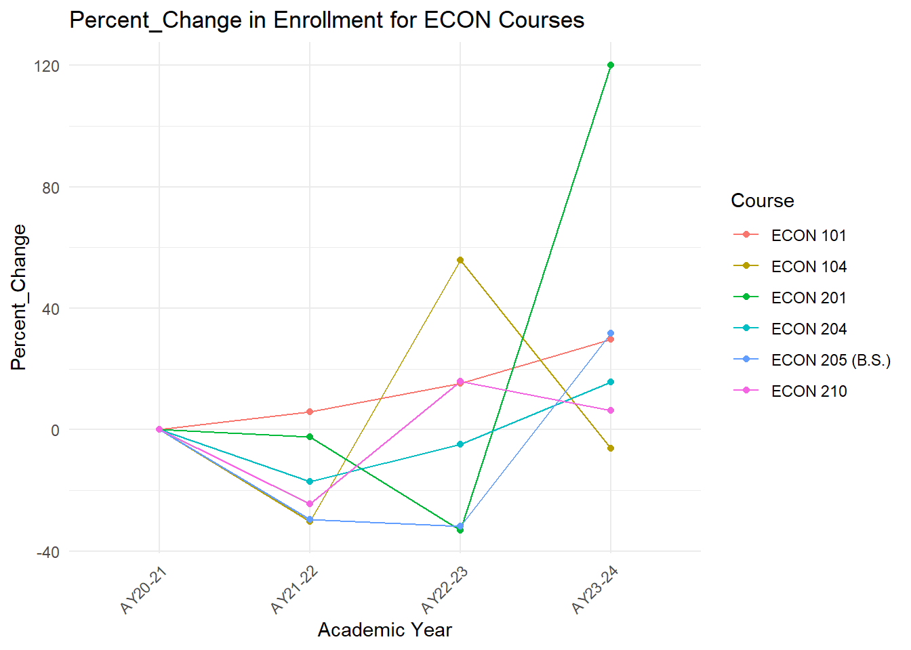
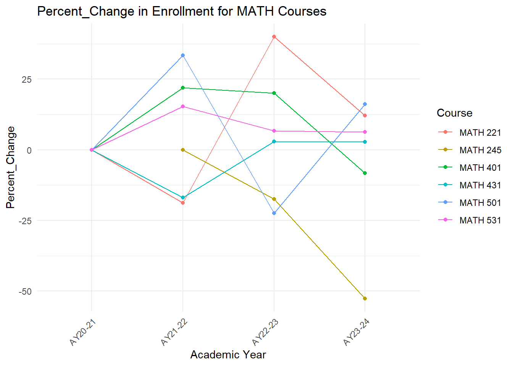

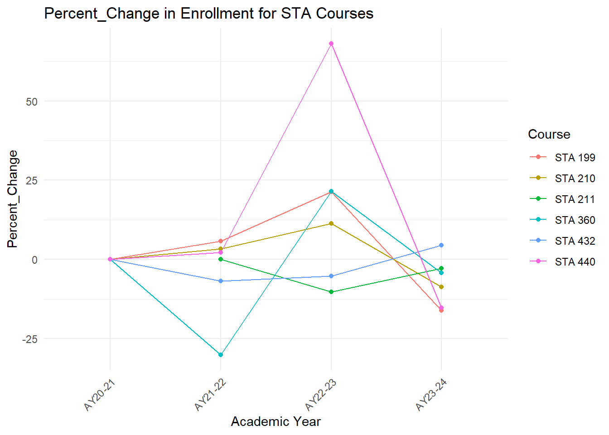
# Loop through each course prefix to fit linear models
model_results <- list()
for(prefix in course_prefixes) {
# Filter data for the current prefix
department_subset <- data_long %>%
filter(grepl(paste0("^", prefix), Course)) %>%
group_by(AcademicYear) %>%
summarize(TotalEnrollment = sum(Enrollment, na.rm = TRUE), .groups = 'drop') %>%
mutate(AcademicYearNumeric = as.numeric(factor(AcademicYear)))
# Fit the linear model
model <- lm(TotalEnrollment ~ AcademicYearNumeric, data = department_subset)
model_results[[prefix]] <- list("model" = model, "data" = department_subset)
}
# Optionally, print summary of models for each prefix
# lapply(model_results, function(x) summary(x$model))for(prefix in course_prefixes) {
department_subset <- model_results[[prefix]]$data
p <- ggplot(department_subset, aes(x = AcademicYearNumeric, y = TotalEnrollment)) +
geom_line(aes(color = prefix), size = 1) + # Line for each prefix
geom_point(aes(color = prefix), size = 3) + # Dots for each data point
geom_smooth(method = "lm", se = FALSE, linetype = "dashed", color = "black", size = 1) + # Black, dashed trendline
scale_x_continuous(breaks = department_subset$AcademicYearNumeric, labels = department_subset$AcademicYear) + # Adjust x-axis labels for readability
labs(title = paste("Total Enrollment Trend for", prefix),
x = "Academic Year", y = "Total Enrollment",
color = "Course", linetype = "Trendline") + # Adjust legend title for linetype
theme_minimal() +
theme(axis.text.x = element_text(angle = 45, hjust = 1))
print(p)
}`geom_smooth()` using formula = 'y ~ x'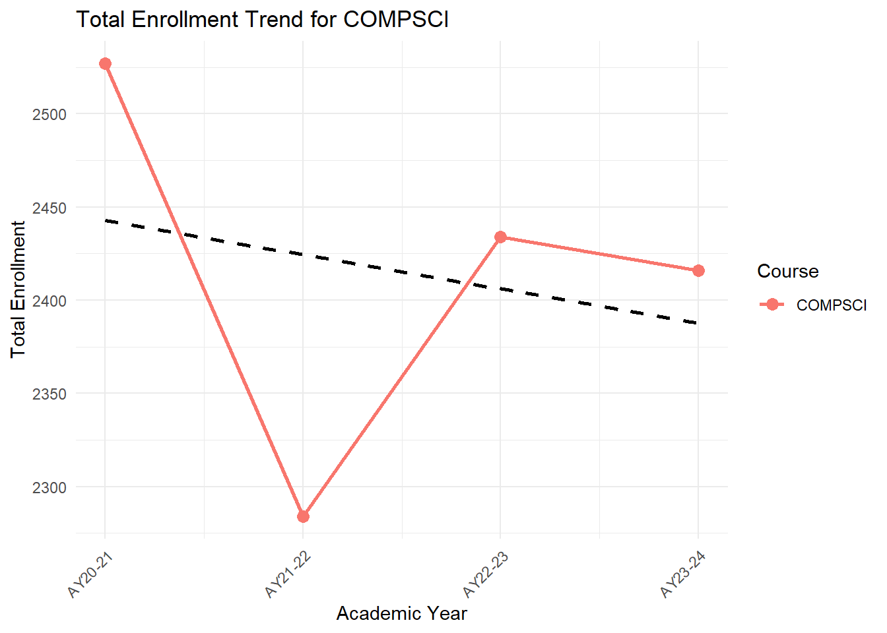
`geom_smooth()` using formula = 'y ~ x'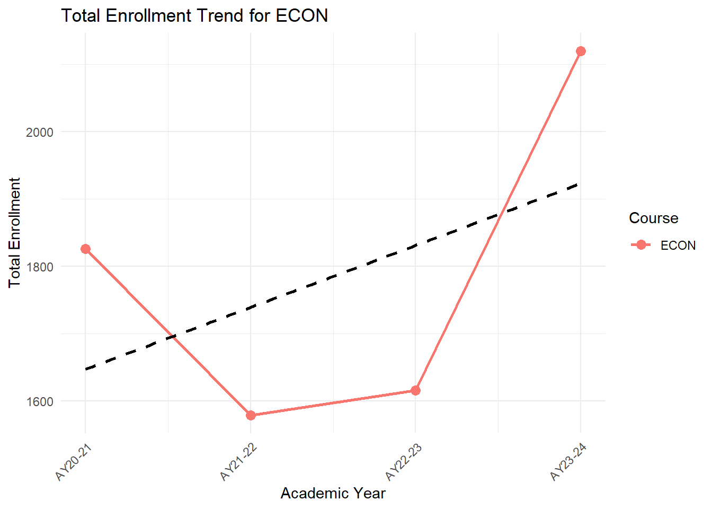
`geom_smooth()` using formula = 'y ~ x'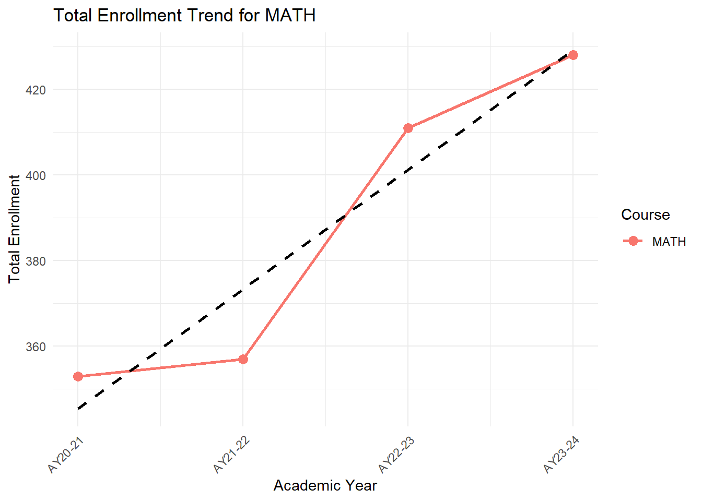
`geom_smooth()` using formula = 'y ~ x'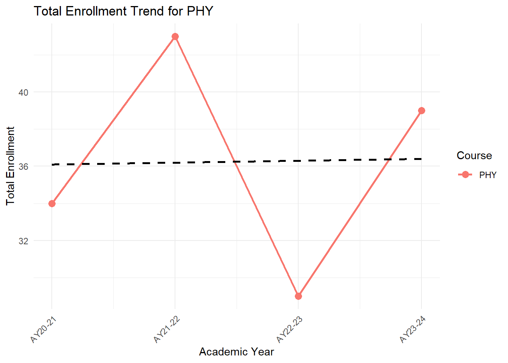
`geom_smooth()` using formula = 'y ~ x'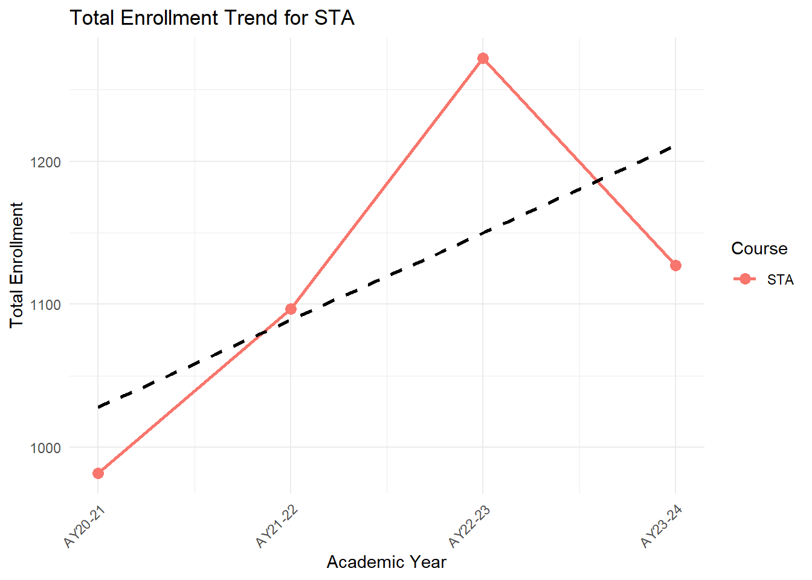